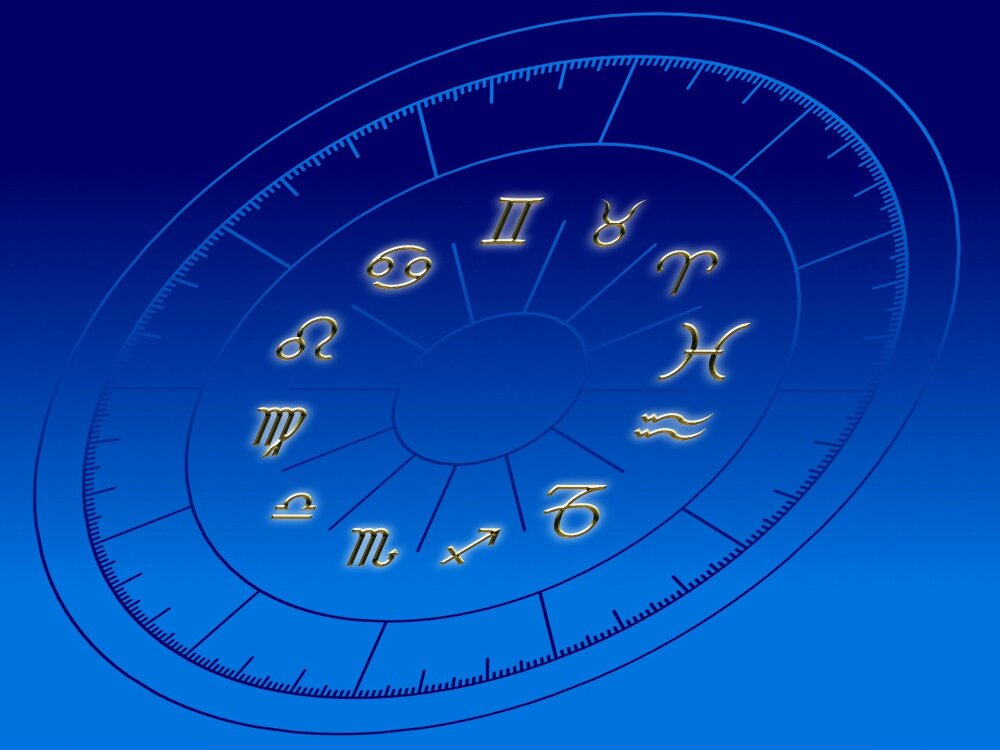

Aries
Géminis
Cáncer
Leo
Virgo
Libra
Escorpio
Sagitario
Capricornio
Acuario
Piscis
En esta versión divertida de los signos del zodiaco para programadores, nos preparamos para un viaje lleno de risas y diversión. Comenzamos con Aries, el codificador loco, que siempre está buscando nuevos desafíos y retos. Aunque puede ser un poco impulsivo, nunca se rinde hasta que encuentra la solución perfecta. Luego, tenemos a Tauro, el debugador obstinado, que nunca se da por vencido aun cuando todos los demás han abandonado el proyecto. Y finalmente, tenemos a Géminis, el programador bromista, siempre está listo con un chiste o una broma para hacer reír a sus compañeros y mantener un ambiente de trabajo positivo. En resumen, estos signos del zodiaco para programadores son una combinación perfecta de habilidades técnicas y sentido del humor.
Las personas cuyo signo del zodiaco es Tauro suelen tener un temperamento firme, ser cabezotas y decididas. Además, les gusta sentir seguridad y no suelen dejar nada importante en manos de la improvisación. Por norma general son conservadores y de ideas fijas, esto junto a su carácter terco no suele hacerlos los mejores en los debates, ni son personas fáciles de convencer. Son pragmáticos y huyen de los malos rollos tirando de sarcasmo y sentido del humor. A los Tauro les encanta el arte, las cosas bonitas, la belleza en general y los bienes materiales, los cuales valoran muchísimo. De ahí su alta capacidad de ahorro. Son prudentes y tienen un gran sentido de la justicia, de hecho, los Tauro acostumbran a respetar las normas y no se sienten cómodos saltándoselas..